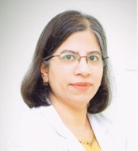

Meet Our Doctors
Advanced fetal medicine expertise and clinical genetics backed by international fellowships and decades of academic excellence.
 DIRECTOR · SFMGC
DIRECTOR · SFMGC
Dr. Rachna Gupta
Dr. Rachna Gupta has vast experience in Fetal Medicine (practicing since 2009), with training from both within India as well as abroad (UK and Israel). She is the only doctor in India to have undergone an International Fellowship on Fetal Neurosonography at Lis Hospital for Women’s Health, Tel Aviv, Israel, under world-renowned experts Prof. Gustavo Malinger and Dr. Karina Krajden Haratz.
She is an approved examiner for FMF-UK for competence in 18-23 weeks (Anomaly / Level II) scans in India and a certified trainer for ultrasound in obstetrics by FOGSI. She serves as General Secretary of FMF India.
Past Engagements: Apollo Centre for Fetal Medicine, King’s College London, AIIMS New Delhi, Maharaja Agrasen Hospital, Lis Hospital for Women’s Health (Israel).
Current Affiliations: Director - Sonepat Fetal Medicine and Genetic Centre; Visiting Consultant - Apollo Centre for Fetal Medicine, Indraprastha Apollo Hospital, New Delhi.
- 11-13 weeks scan (NT scan)
- 18-23 weeks scan (Anomaly / Mid trimester scan)
- Fetal Neurosonography & Fetal Echocardiography
- Multiple pregnancy scans (Twins / Triplets)
- Cervical assessment & Growth Scan / Doppler
- Chorionic villus sampling (CVS) & Amniocentesis
- Fetal blood sampling / Thoracocentesis
- Intrauterine transfusion & Fetal reduction
- Management of complex fetal anomalies & high-risk pregnancy
ORCID ID: orcid.org/0000-0001-6008-6764
• Spectrum of fetal limb anomalies. Thakur S, Chaddha V, Gupta R, Singh C, et al. Journal of Clinical Ultrasound, Aug 2022.
• Amyoplasia in monochorionic monozygotic pregnancy following interstitial laser. Gupta, R., & Sharma, A. American Journal of Medical Genetics Part A, 2022.
• Prenatal diagnosis of rhombencephalosynapsis: neuroimaging features. Haratz KK, Gupta R, Malinger G, et al. Ultrasound Obstet Gynecol, 2021.
• DYNC2H1 gene mutation causing short rib thoracic dystrophy in three foetuses. Thakur S, Gupta R, et al. Clinical Genetics, 2021.
• Isolated fetal ascites: Etiology and prognosis – 10-Year experience from tertiary referral center. Sablok A, Gupta R, Kaul A, et al. J Indian Assoc Pediatr Surg, 2021.
• Pallister-Killian Syndrome: Review of fetal phenotype. S. Thakur, R. Gupta, et al. Clinical Genetics, 2019.
• First-trimester screening for spontaneous preterm delivery with maternal characteristics and cervical length. Greco E, Gupta R, Nicolaides KH. Fetal Diagnosis and Therapy, 2012.
Dr. Hemlata Wadhwani Bhatia
Dr. Hemlata Wadhwani Bhatia is a Physician Executive and Clinical Geneticist with 25+ years of experience spanning clinical genetics, genomics, molecular diagnostics, precision medicine, and oncology. She has built and led genomic services across leading healthcare institutions, bringing a distinctive perspective at the intersection of clinical medicine, scientific innovation, and healthcare strategy.
She is an alumna of Maulana Azad Medical College, completed postgraduate training in Paediatrics at Safdarjung Hospital, followed by a DBT-supported Fellowship in Medical Genetics under Dr. I.C. Verma and a Fellowship in Rare Disorders from the Care-for-Rare Foundation, Germany. She also holds an MBA from Durham University Business School, UK.
Leadership: Founder & CEO of NeiLife Biosciences; Former Vice President – Genomics at Agilus Diagnostics (heading reproductive genomics & newborn screening across India & 22 international markets).
Advisory Roles: Medical Advisor at VentureBlick (Singapore), Healthcare Industry Expert for Infollion Research Services, Mentor & Chief Medical Advisor at Care Rare India.
Committees: Core committee member of genetic experts at the Indian Academy of Pediatrics (IAP) contributing to IAP Genetics Action Plan 2023.

CLINICAL GENETICIST- Comprehensive Pre-conceptional & Prenatal Genetic Counseling
- Reproductive Genomics, Carrier Screening & NIPT Interpretation
- Rare Inherited Genetic Disorders & Syndromic Evaluations
- Molecular Diagnostics, Precision Medicine & Pediatric Genetics
- Evaluation of Recurrent Pregnancy Loss & Inherited Family Anomalies
- Newborn Genetic Screening & Inborn Errors of Metabolism